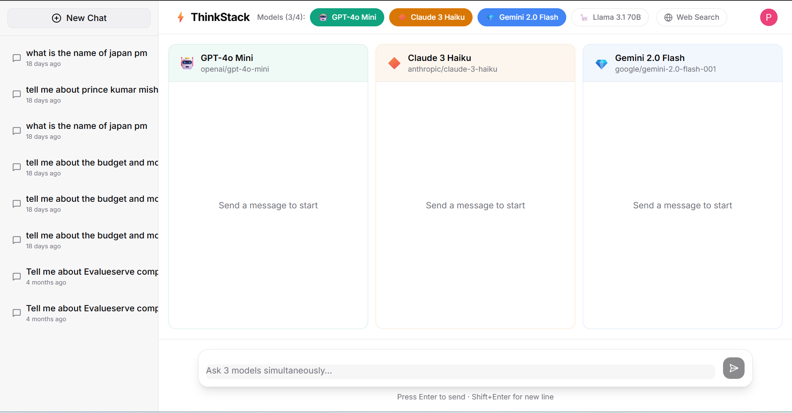
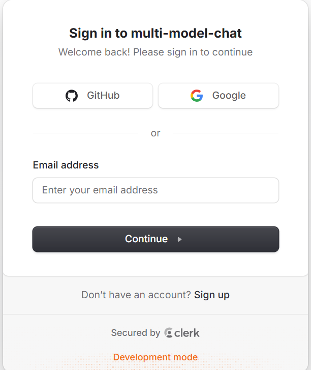
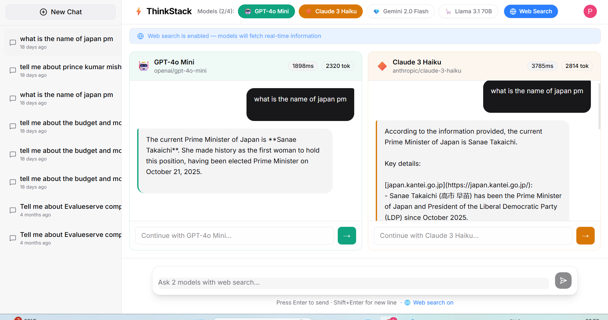

ThinkStack is a modern AI SaaS platform that enables users to interact with multiple Large Language Models from a single interface. Users can compare AI responses, manage chat history, and switch between models without leaving the application, delivering a seamless and productive AI experience.

Modern developers, students, and professionals frequently switch
between multiple AI platforms like ChatGPT, Claude, Gemini,
and DeepSeek to compare responses and improve productivity.
ThinkStack eliminates this friction by providing a unified AI
workspace where users can interact with multiple Large Language
Models from one dashboard. With secure authentication,
conversation history, and model switching, it creates a faster
and more efficient AI experience.
ThinkStack combines multiple AI models, secure authentication, and a modern user experience to provide an intelligent workspace for developers, students, and professionals.
Chat with multiple Large Language Models including GPT, Claude, Gemini and DeepSeek from a single interface.
Clerk authentication ensures secure sign-in, session management and protected user data.
Automatically saves previous conversations allowing users to revisit earlier discussions.
AI responses support Markdown rendering, syntax highlighting and beautifully formatted code.
Optimized API integration delivers quick responses with minimal latency.
Fully responsive interface optimized for desktop, tablet and mobile devices.
Every screen is designed to provide a fast, intuitive and seamless AI-powered experience—from authentication to multi-model conversations.
The dashboard provides quick access to recent conversations, AI models, and productivity tools in a clean and intuitive layout.

Clerk provides secure authentication with modern login flows, session management, and protected routes.
Instantly compare responses from different AI models to improve decision-making and productivity.

ThinkStack uses a modern AI architecture powered by Clerk Authentication, Next.js Server Components, OpenRouter API and multiple Large Language Models.
ThinkStack is built using a modern full-stack architecture focused on scalability, authentication, AI integration and responsive user experience.
Developing ThinkStack involved solving challenges related to AI integration, authentication, API optimization, and delivering a seamless user experience across multiple devices.
Supporting multiple Large Language Models through a single interface while maintaining a consistent user experience.
Integrated OpenRouter API to provide a unified gateway for GPT-4o, Claude, Gemini and DeepSeek, enabling seamless model switching.
Protecting user data while providing a smooth login experience across multiple devices.
Implemented Clerk Authentication with secure session management, OAuth login and protected application routes.
AI responses can become slow when processing large prompts or switching between multiple models.
Optimized API requests, response rendering and frontend updates to provide a fast and responsive user experience.
Delivering a consistent AI experience across desktop, tablet and mobile devices.
Built responsive layouts using Tailwind CSS with adaptive components and optimized spacing for different screen sizes.
ThinkStack was developed using a modern AI-first architecture, integrating multiple Large Language Models with secure authentication, scalable APIs and a responsive user experience.
Building ClaimCore strengthened both my technical expertise and my understanding of designing enterprise-grade software systems.
Implemented secure JWT authentication with role-based authorization and protected routes.
Designed normalized SQL Server schemas using Entity Framework Core relationships and migrations.
Built reusable standalone components, services and guards following scalable project architecture.
Integrated Razorpay APIs with payment verification and secure transaction handling.
Developed complete insurance workflows from registration to claim approval and policy management.
Improved application responsiveness through lazy loading, optimized API calls and reusable services.